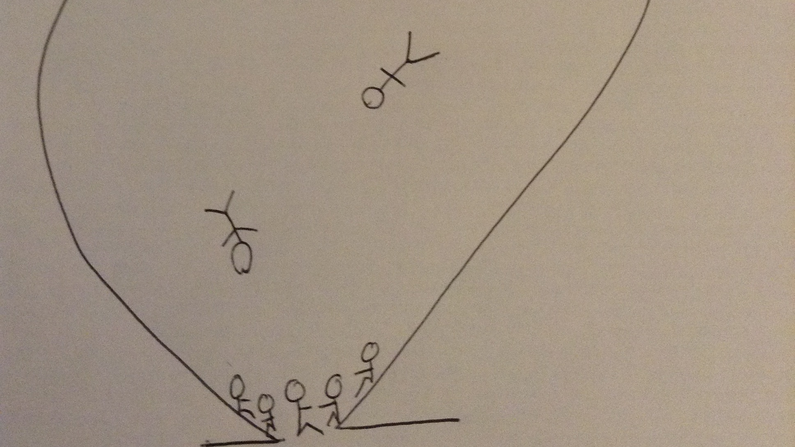

Blogs How should cities deal with legacies of guilt? Make Charity History The most important thing I’ve probably ever written in my life What does the ‘economy’ look like and why does it matter? What does the ‘economy’ look like? Part Two: developing the view from below 